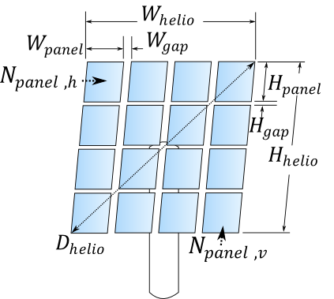
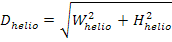
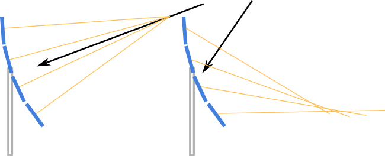
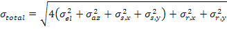
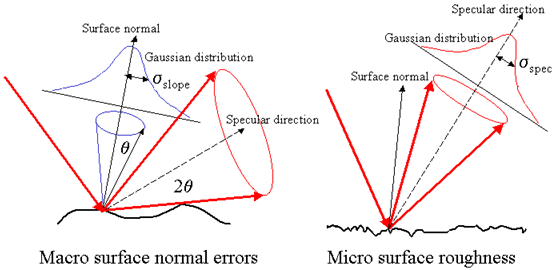
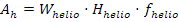
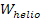
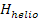
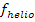

Heliostat geometry includes macroscopic dimensions and parameters to specify heliostat facets. Relevant dimensions are shown in the following figure.

[m] Physical extent in the width direction of the heliostat structure. This value is the basis for calculating heliostat spacing and collision avoidance requirements.
[m] Physical extent in the height direction of the heliostat structure. This value is the basis for calculating heliostat spacing and collision avoidance requirements.
[m] The maximum physical extent of the heliostat. Equal to the diagonal length of the heliostat.

Model the heliostat using multiple facets (also known as "cant panels").
The number of panel facets in the horizontal (width) dimension.
The number of panel facets in the vertical (height) dimension.
[m] Specified gap length between panels in the horizontal dimension.
[m] Specified gap length between panels in the vertical dimension.
A heliostat can be composed of multiple mirror facets, each of which may be mounted on the heliostat structure at a particular preferred orientation to maximize optical performance. The practice of modifying the mounting orientation of each facet is known as "canting", and several techniques are available for determining the orientation of each facet.
The purpose of the canting process is to better aim the reflected heliostat image from each facet at a desired target. Canting is often implemented such that the image reflected from the heliostat is ideally focused on the target for a particular heliostat tracking position or orientation. When the heliostat orientation differs from the position at which it was originally canted, the image distorts as a consequence of astigmatism, an effect illustrated below. Light that is reflected to a single focal point at the canting position is instead reflected to a focal region, diluting the concentrating effect of canting.

Heliostat performance can be catered to particular sun positions or times of year in this way. If heliostats are canted such that the focal accuracy is maximized for a particular sun position, then overall field efficiency will tend to increase under those conditions. The following methods allow you to choose how to orient the facets.
Facets are aligned in a plane containing the pivot point of the heliostat. The normal vector from each facet is parallel with the other facets and with the aiming vector of the heliostat.
Facets are aligned when the heliostat aiming vector is pointed directly at the tower. Each facet is adjusted such that the normal vector intercepts the receiver at the heliostat aim point.
Facets are aligned such that their normal vector aims at a selected point along the heliostat normal vector. You can specify the canting aim point using the following settings.
If the cant radius scales with the tower height (Scale Cant Radius With Tower Height = TRUE), then the canting radius factor multiplied by the tower height gives the distance along the heliostat normal vector at which individual facets will be aimed.
If the cant radius does not scale with the tower height (Scale Cant Radius With Tower Height = FALSE), then the canting radius factor indicates the distance in meters along the heliostat normal vector at which the individual facets will be aimed.
Choose whether the Canting Radius Factor is a distance relative to the tower height (TRUE) or whether the value is specified in meters (FALSE).
Calculated value indicating the distance along the heliostat normal vector at which the heliostat facets will be aimed. The normal vector from each heliostat facet will be aligned to pass through a point at this distance from the heliostat rotation point.
Off-axis canting methods align the heliostat facets such that the reflected images overlap on the receiver when the heliostat is in tracking mode. This method adjusts the facet alignment to minimize image size at the specified heliostat tracking position. The heliostat tracking position is calculated by SolarPILOT at an hour and day of the year that you specify.
Hour of the day relative to noon (+ is afternoon, - is morning) at which the heliostat tracking position is calculated.
Day of the year (1 ... 365) at which the heliostat tracking position is calculated.
Calculated value indicating the solar elevation angle above the horizon at the specified canting hour and day of the year.
Calculated value indicating the solar azimuth angle at the specified canting hour and day of the year.
User-defined canting methods allow you to specify the point in space relative to the normal vector of the heliostat at which individual facets will point.
Specify the x,y,z (i,j,k) components of the canting position vector. The vector is relative to the uncanted plane of the heliostat.
Specify the multiplier on the canting vector to determine the distance along the directional vector at which the individual facets will be aimed.
Indicate whether to scale the canting vector components by the slant range of the heliostat (the slant range is the distance between the heliostat pivot point and the center of the receiver. If scaling is enabled, the vector components are multiplied by the slant range and the canting vector magnitude.
Specify the focal point radius for the heliostat.
The heliostat has no curvature (infinite radius) and is a flat, planar surface.
The heliostat focal length is equal to the distance between the heliostat pivot point and the receiver centroid.
The heliostat focal length is equal to the average slant range of all heliostats that use the current template.
You can specify the focal length in both the horizontal (X) and vertical (Y) directions.
Choose whether to specify the focal length with a single value. If TRUE, then both X and Y focal lengths will share the same value. If FALSE, then you can specify the focal length for each dimension independently.
Allow curvature in the horizontal direction. If FALSE, the heliostat will not have curvature in the horizontal direction.
Allow curvature in the vertical direction. If FALSE, the heliostat will not have curvature in the vertical direction.
The focal length in the horizontal direction (assuming the heliostat normal vector is pointing toward the horizon).
The focal length in the vertical direction (assuming the heliostat normal vector is pointing toward the horizon).
The standard deviation of angular error in the elevation drive assuming a normal distribution.
The standard deviation of angular error in the azimuth drive assuming a normal distribution.
Standard deviation of angular displacement (waviness) of the heliostat surface in the horizontal direction assuming a normal distribution.
Standard deviation of angular displacement (waviness) of the heliostat surface in the vertical direction assuming a normal distribution.
Standard deviation of the specular reflection from the surface (specularity) in the horizontal direction assuming a normal distribution.
Standard deviation of the specular reflection from the surface (specularity) in the vertical direction assuming a normal distribution.
Calculated value indicating the effective standard deviation of the reflected image from the heliostat including all sources of error. The formula for calculating this value is:

where:
|
rad |
Elevation pointing error |
|
rad |
Azimuthal pointing error |
|
rad |
Surface slope error in X |
|
rad |
Surface slope error in Y |
|
rad |
Reflected beam error in X |
|
rad |
Reflected beam error in Y |
Note that the impact of the elevation, azimuth, and surface slope errors are 22=4 times the impact of reflected beam error. This is due to the definitions of each error. For all but the reflected beam error, the angular error indicates deviation of the surface normal vector. The impact of an angular surface displacement is to double the angular displacement of the outgoing reflected light. In the case of the reflected beam error, the displacement is defined around the reflected vector that has already interacted with the surface. Therefore, by definition, the reflected beam error has 1/4th the impact of the surface errors.
This concept is illustrated below. The surface normal errors are shown on the left, and the reflected beam (specular) errors are shown on the right.

Image NREL - Courtesy SolTrace documentation. T. Wendelin.
The ratio of active reflective area to total structural area. The total structural area is equal to the Structure width multiplied by the Structure height. The power delivered by the heliostat is proportional to the reflective surface ratio.
The base surface reflectivity of the mirror in a pristine or clean state. The power delivered by the heliostat is proportional to the mirror reflectivity.
The fraction of light that is reflected after accounting for surface soiling.
The total reflectance of the heliostat after accounting for the Mirror reflectivity and the Soiling factor. The total optical reflectance is equal to the product of the mirror reflectivity and the soiling factor.
The effective reflective area (in the aperture plane) of the heliostat. The total reflective aperture area is equal to the product of the Structure width, Structure height, and Reflective surface ratio.

where:
 |
m |
Heliostat structure width |
 |
m |
Heliostat structure height |
 |
- |
Reflective surface ratio |